This section describes how to create a new custom form.
You must be logged in as system manager or system administrator.
-
In the top toolbar selectAdministration > Customize > Forms.

-
A new screen appears. Click on the „Add“ button in the toolbar.
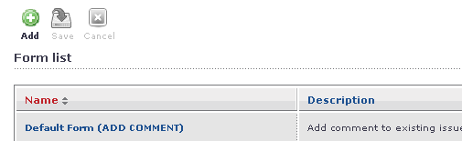
-
Give the new form a name and a description.
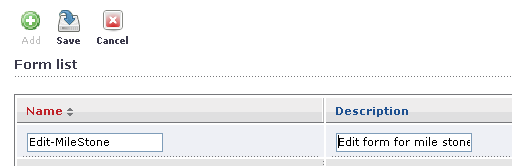
-
Click on „Save“ in the toolbar area. Then click on the „Edit“ icon in the
Action column on the right.
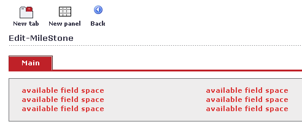
-
The interactive form designer appears with the new form. This designer supports
drag and drop. Click into the top panel to select it. In the Properties window
the panel properties appear. You can move the Properties window to a convenient
location in the main browser window by selecting the blue bar and dragging the
window to a new position.
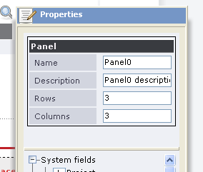
-
You keep the default of 3 rows and 3 columns for this panel. To add a field to
a location you select the field from the field list in the Properties
window.
Here you have selected the itemId.
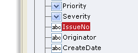
-
You drag the selected field to its position in the panel and drop it there
(left mouse down in the field list, drag to position, release mouse).
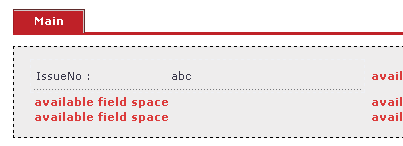
-
The same procedure you repeat for some more fields. You can leave spaces empty
without any problem. You can also have fields occupy more than one row or
column. You can add a new panel by clicking on the panel button in the toolbar.
You can drag a panel to another position.
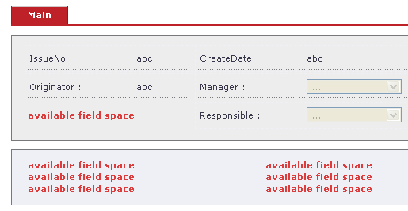
-
For the new panel, change the number of rows and columns to two rows and one
column,
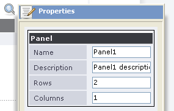
-
Add a title or synopsis field and a description fields These fields are rather
large, so you need to give them more space by having only one column for the
entire width.
Notice that the label for the description is in the middle. It might be better to have it at the top.
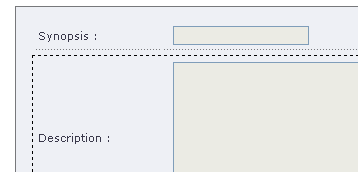
-
Select the description field and in the Properties window change the label
alignment for the description field to vertical top.
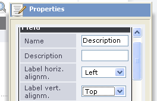
-
This looks better, the label has moved to the top.
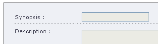
-
Now add a custom field of type cascaded select. These fields can be rather
wide, too wide for one column.
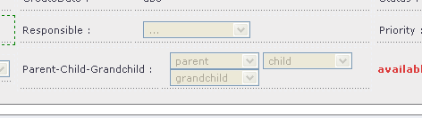
-
Select the new cascaded select field in the panel. In the Properties window
change property column span to 2. This will give this field 2 columns
space.
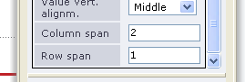
-
When you are done click the „Back“ button in the toolbar area.
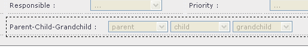
- Assign the new form to an action. For this go to menu „Administration > Customize > Custom forms > Forms assignment...
When you call up the action you will see your newly designed screen. You can modify the layout of your new screen any time if you are not satisfied.
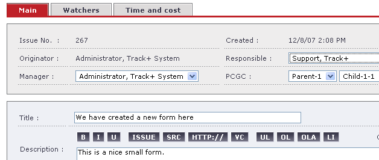